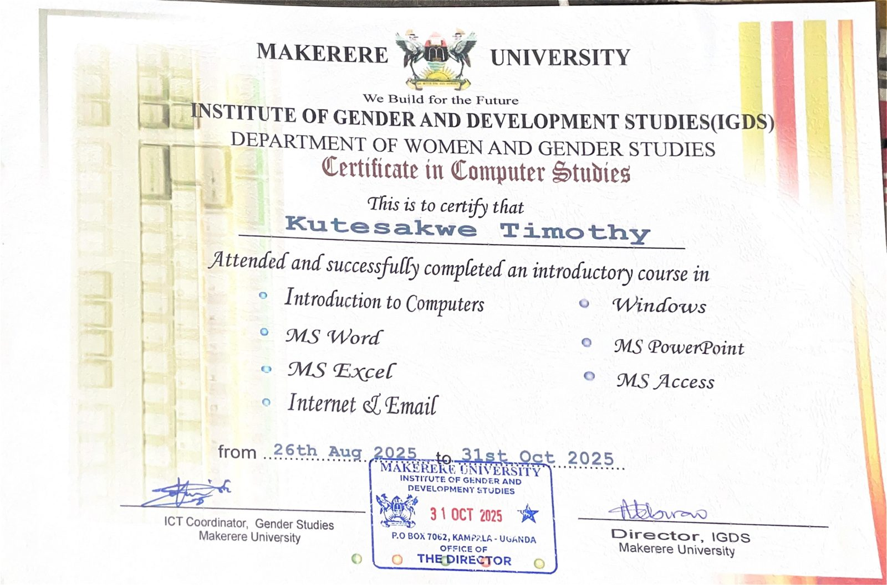

Computer Systems
Learning computer hardware, operating systems and troubleshooting.
Hello, welcome to my portfolio
I am a motivated student with an interest in technology, networking, programming and solving practical problems. I enjoy learning new skills and building projects that help me grow in the technology field.
Based in Uganda
A little about me
I’m Timothy Kutesakwe, a computer science student who is passionate about technology and continuous learning. My interests include computer networking, programming, and understanding how computer systems work. I’m working to strengthen my practical skills through study, experimentation, and personal projects.
What I’m developing
Learning computer hardware, operating systems and troubleshooting.
Networking fundamentals and Cisco-related concepts.
Building coding foundations and practising problem-solving.
Exploring HTML, CSS, JavaScript and web publishing.
Certified in MS Word, Excel, PowerPoint and Access for documents, spreadsheets, presentations and databases.
Comfortable using Windows, browsing the internet and managing email, covered in my Certificate in Computer Studies.
My learning journey
University studies
Add your exact programme and dates here if you want them displayed.Certificate in Cisco
Networking studies and Cisco-related learning.Practice and progress
A few project ideas that reflect the areas I’m learning. Replace these descriptions with your actual projects as you complete them.
A responsive website presenting my background, education, interests and contact details.
HTML · CSS · JavaScriptPractice exercises exploring network topologies, IP addressing and Cisco networking concepts.
NetworkingSmall coding exercises to practise logic, debugging and structured problem-solving.
ProgrammingRecognition and learning
Certificates and milestones that mark my progress in technology.

26 Aug 2025 – 31 Oct 2025
Makerere University · Institute of Gender and Development Studies (IGDS), Department of Women and Gender Studies
Attended and successfully completed an introductory course in computer studies, signed by the ICT Coordinator and the Director of IGDS.
View full certificate →Let’s connect
I’m open to learning, collaboration and opportunities to grow in technology.